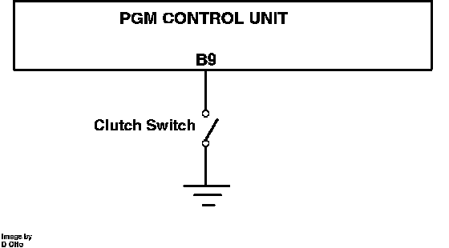

Clutch Switch: Description and Operation
M/T Clutch Switch Operation:

The clutch signal is produced by a pedal mounted switch under the dash. When the clutch pedal is depressed, it opens a normally shorted to ground ECU terminal B9. The signal is used for idle modification and cruise control deactivation when the transmission is being shifted.